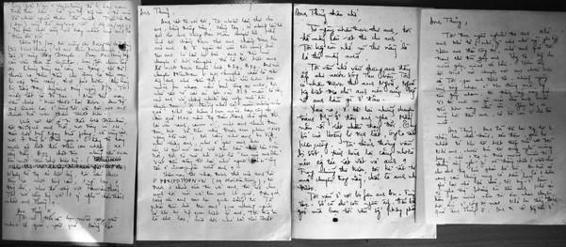

“Anh đã để lại trong tôi một thằng bạn chân thành, gắn bó nhất từ khi tôi biết tiếp xúc với đời. Nhớ anh, nhiều khi tôi suy nghĩ mông lung, nếu như một trong hai đứa mình mất đi, thằng sống sẽ nghĩ gì về thằng chết... (viết thư cho anh trong lúc pháo Bồ Bồ, An Hòa cứ bắn cầm canh, rung cả hầm).”
☆
Mình kể tiếp hôm chiếu phim ở 22 Hai Bà Trưng. Mọi người đều ngỡ ngàng rồi hân hoan chúc mừng. Riêng có một người chỉ ngồi trầm tư, không nói năng gì.
Anh tên là Trần Hữu Nghĩa, làm việc ở Phái đoàn Mặt trận Dân tộc Giải phóng, trụ sở ở số 19 Hai Bà Trưng, phía bên kia đường, đối diện nhà 22.
Nghĩa là anh con ông bác của Triều Phương. Biết nhau từ lâu, mình mời anh ấy sang xem.
Khi mọi người tản đi rồi anh mới nói:
- Anh Thủy ơi, tôi xúc động lắm, anh làm phim về quê tôi quá hay, mà lại nhận quê tôi cũng là quê anh: “Những Người Dân Quê Tôi”. Khi tôi thấy Triều Phương đứng tên là đồng tác giả với anh, tôi đau đớn quá, tôi muốn khóc, nó đã không được xem phim... Triều Phương vừa chết rồi anh ạ!
Mình như chết lặng. Bao nhiêu công sức đã đổ ra, bao nhiêu hiểm nguy đã vượt qua, trồng cây đến ngày hái quả thì Triều Phương không còn nữa, bao nhiêu đồng đội bạn bè cũng đã khuất bóng.
Ngày giỗ anh là rằm tháng 5, anh ra đi để lại hai đứa con thơ dại, Châu Giang, Cẩm Linh và người vợ trong tù.
☆
Thủy đưa tôi xem những bức thư tình nghĩa sâu nặng của anh Tý viết gửi ra từ Quảng Ðà và kể:
...Vì sợ thất lạc, những năm đi học ở Nga 1972-1977, mình đã mang theo những bức thư đó bên mình và giữ gìn cẩn thận.
Năm 1988, khi vào Ðà Nẵng dự Liên hoan phim, mình đã tìm đến mộ anh Tý.
Anh nằm cạnh hai người em ruột, Sửu và Mão, trong nghĩa trang liệt sĩ huyện Duy Xuyên. Trước khói hương và vong hồn của người bạn đã khuất, mình đã trao tận tay những bức thư này cho con anh Tý để các cháu giữ làm kỷ niệm về nét chữ, tình cảm và suy nghĩ của người cha trong hoàn cảnh chiến tranh khi chúng còn nhỏ, mới vài ba tuổi. Mấy chục năm qua, đây là lần đầu tiên trong đời, chúng được thấy nét chữ của người cha cùng những chuyện kể thời chiến tranh. Khi đọc những bức thư này, chúng khóc như mưa như gió, nhất là cháu Cẩm Linh. Các phóng viên của đài Truyền hình Ðà Nẵng đi theo đã không bỏ lỡ cơ hội, họ đã làm bộ phim “Trở Lại Chiến Trường Xưa”, một bộ phim tài liệu xúc động kể về chuyện này.
☆
Thủy nhắn các cháu photocopy và gửi những bức thư đó ra theo đường chuyển phát nhanh. Tôi đã đọc hết và đọc nhiều lần.
☆
...Anh Thủy,
Tôi đọc ngấu nghiến thơ anh. Nhớ anh khó tả (nhớ gì như nhớ người yêu ấy). Hôm anh đào công sự, nhớ anh quá, tôi tranh thủ tìm gặp anh. Hy tệ, không cho mình gặp, mình ức lắm...Vợ tôi nuôi con gà mái chờ anh mãi, đến hôm nay vẫn còn. Gặp tôi, ai cũng hỏi đến anh, cả bà con ở chợ Bà nữa. Anh đã để lại trong tôi một thằng bạn chân thành, gắn bó nhất từ khi tôi biết tiếp xúc với đời. Nhớ anh, nhiều khi tôi suy nghĩ mông lung, nếu như một trong hai đứa mình mất đi, thằng sống sẽ nghĩ gì về thằng chết (viết thư cho anh trong lúc pháo Bồ Bồ, An Hòa cứ bắn cầm canh, rung cả hầm). Có một hôm ghé lại nhà bà Hảo, tôi không muốn ở lâu vì nghe thằng Thắng hỏi đến anh. Nhớ cái hôm bọn mình nhịn đói ôm nhau chuyền hơi ấm ở công sự mật. Nhớ lại thấy thích quá anh Thủy à. Anh đi rồi không còn ở chia lửa với bọn tôi.

...viết thư cho anh trong lúc pháo Bồ Bồ, An Hòa cứ bắn cầm canh, rung cả hầm...
Ðộ này tôi vất vả lắm anh à. Hết hóm hỉnh, hết nghịch ngợm rồi, có ngày chạy ăn từng bữa cho đơn vị. Tôi chỉ lo nếu sau này anh gặp lại, tôi không còn bản lĩnh của thằng Tý ở huyện Duy Xuyên. Tôi đã quên đi tất cả – trừ anh. Hôm qua tôi ghé lại thắp hương ở mộ cho Sơn – tôi cảm thấy mình yếu đuối quá, có cái gì sướt mướt. Một nhớ thương, một kỷ niệm đã làm giàu cho nguồn sống.
Có lẽ tôi nhớ anh hơn anh nhớ tôi...
...Ai ở ngoài đó vào tôi cũng hỏi tin anh. Có lần họ bảo anh đến nói chuyện ở Hội Văn Nghệ, thế là tôi biết anh đã vượt được tuyến lửa B57, B52. Anh nói chuyện ở Hội Văn Nghệ về miền Nam chắc là anh nhớ đến tôi, nhớ cái hôm bọn mình ôm nhau nằm dưới công sự mật, tôi nhớ rất rõ cái áo lót bằng vải “mồng 8 tháng 3” màu lá cây của anh vá chồng nhiều lớp, ướp mồ hôi thuốc đạn, “ôi nhớ cái mùi nồng mặn quá”. Nhớ cái hôm bọn mình bật công sự, cầm quả M26 nằm trong đám tranh, mặt anh đen kịt thuốc đạn. Về trên này được xem phim “Một Ngày Hà Nội”, tôi càng nhớ anh da diết, như thấy anh, như ở gần anh hơn. Ồ cái cô gái mở cánh cửa trên lầu nhìn lên vòm trời, tôi tò mò hỏi biết là “em của anh Dân”. Viết đến đây tôi lại nhớ người bác sĩ công tác ở Quảng Ngãi nữa anh ạ!
...Từ trong ác liệt tôi chưa tìm ra một tình cảm, một người bạn, một đồng chí như đã sống với Trần Văn Thủy. Tôi nói câu ấy với một ý nghĩa chân thành nhất anh Thủy ạ!
...Anh có trở lại miền Nam không? Anh đi rồi tôi mới hiểu rằng “con người Hà Nội” rất mau quen với cuộc sống đầy gian khổ ác liệt ở vành đai hỏa lực này. Chính cái đó gây cho tôi nhiều ấn tượng sâu sắc... những ngày đắng cay gian khổ đã xui bọn mình gặp nhau và trở thành gắn bó.
...Anh Thủy ạ, vợ tôi bị tù, chắc nó cũng thầm nhắc đến anh, điều ấy rất dễ hiểu anh ạ. Tôi thấy có nhiều lần nó viết thư cho anh, tình cảm rất chân thành và thoáng có cái giọng của “người chị”, có lẽ cũng vì thế, nó viết thư mà lại không gửi. Nhớ anh tôi hay hát những bản nhạc anh hay hát. Hiện nay bệnh tình anh thế nào? Bộ phim ấy đã gửi nước ngoài tráng xong chưa? Anh có thỏa mãn không?...
...Cho đến hôm nay tôi vẫn mơ về “Một Ngày Hà Nội” và không có gì sung sướng bằng anh dắt tôi đi giữa lòng Hà Nội, dù tôi chỉ là “con nai vàng ngơ ngác đạp trên lá vàng khô”. Tôi đi xa đề quá anh Thủy nhỉ...
Những bức thư của anh Tý cứ đầy ắp dạt dào tình cảm như thế, chả lẽ trích hết ra đây. Tôi không phải Thủy mà đọc thấy nghèn nghẹn trong cuống họng.
Tôi nhớ hồi giữa những năm sáu mươi, người ta phổ biến “Những bức thư từ tuyến đầu Tổ quốc”. Tôi đã đọc nhưng không hề có cảm giác như khi đọc bức thư của anh Tý. Phải chăng vì đó là những dòng chữ in trong sách, đã qua biên tập chứ không phải nguyên nét chữ, màu mực từ chiến trường gửi ra.
Lời bình luận nào cũng là thừa đối với những dòng thư viết từ trong trái tim, giữa bộn bề khói lửa như thế...
☆